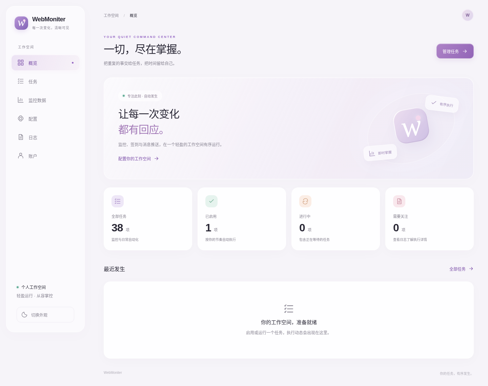

全栈审查与验收记录¶
本轮稳定性与精简审查（2026-10-02）¶
范围为当前仓库，优先保持现有功能、接口、存储结构和第三方任务流程。审查了启动／退出、配置热重载、认证、队列、数据与日志 API、SQLite／MySQL、监控与签到公共执行方式、推送、青龙、前端交互、部署检查和文档。没有执行真实账号签到、推送或部署；外部服务和生产负载的完整可用性仍需人工验收。
项目理解与取舍¶
Vue 3／TypeScript／Pinia 按路由加载页面，通过 /api/v1 访问 FastAPI；任务元数据贯穿配置、注册、调度与青龙。APScheduler、启动和手动入口共用 4 worker／100 容量队列，浏览器任务单独进程隔离且并发为 1。业务默认 SQLite WAL，可启用 MySQL 权威写入、SQLite 镜像和离线 outbox；执行记录独立保存在 runs.db。配置带版本与密钥保留标记，日志采用有界增量读取，生产只有一个 Python Web／调度进程。
保留已有有界并发、线程池、浏览器隔离、分页与缓存策略。仅并行配置页两项独立读取，避免等待时间叠加；没有引入请求聚合 API、共享敏感缓存或新基础设施。参考 Vue 响应式计算、FastAPI 异步边界及同类监控项目 Uptime Kuma 的 CI，借鉴职责分层，不照搬其跨系统／Node 版本矩阵。
问题、证据与处理¶
| 问题与证据 | 影响 | 最小处理／验证 |
|---|---|---|
Config.vue::save 在响应后读取可变的 selected、yamlMode，并把当前 YAML 当已保存基线 |
慢请求期间切换模块或继续输入可能丢失编辑／误报已保存 | 固定提交上下文，保留请求期间编辑，YAML 基线使用提交文本；延迟响应浏览器回归 |
| 配置与元数据读取串行，YAML 展示和保存可重叠 | 增加初次等待，旧响应可覆盖新编辑模式 | Promise.all 并行独立读取，复用 busy 状态阻止重叠操作；类型检查与真实后端配置回归 |
stores.ts 的 computed 直接读 MediaQueryList.matches |
完整效果／触屏模式下系统减少动效变化不触发更新 | 独立响应式偏好；桌面与移动端动态切换回归 |
Logs.vue 切换来源时 refresh 因请求在途被忽略；空增量仍复制整窗 |
新日志额外等待轮询／退避，重复数组分配和列表更新 | 请求结束后补一次刷新，恢复更新立即请求，空增量不替换数组，补加载反馈；慢响应切换回归 |
SQLite 三个事务辅助函数仅捕获 Exception；外层在释放操作锁后再次回滚 |
CancelledError 可遗留未提交事务，锁外回滚可能影响下个调用者 |
事务内覆盖取消并回滚后向上传播，移除外层重复回滚；普通写入／outbox／镜像三个真实 SQLite 取消用例 |
watcher.py 只接受修改时间递增，回调失败仍确认配置 |
旧时间戳恢复漏应用，部分失败后不再重试 | 文件身份／大小／纳秒时间指纹；成功才确认，失败下轮读取最新文件重试 |
db_sync.py 忽略删除返回值，调度回调吞异常；重复恢复／更新触发器重算运行时间 |
部分清理失败被误报成功；重试可能推迟任务 | 删除与调度失败向上传播，主键删除可重复执行，相同触发器与已运行任务不重置 |
| MySQL 读取保留事务，aiomysql 在归还仍有事务的连接时会关闭连接；种入逐行写、outbox 全量读取 | 重建连接、重复往返和大离线日志内存开销 | 结束读事务，500 条分批读取／批量写入，全部批次同事务；ID 范围确认避免超大 IN 参数列表 |
| 镜像读取依赖服务器默认隔离级别 | READ COMMITTED 下各表可能读取不同时点 | 显式只读可重复读快照；真实 MySQL 并发写入实验 |
data_support.py 的旧内存排序与 LRU 仅被测试引用 |
维护不再参与实际分页的逻辑 | 删除三个死函数及对应测试，保留 SQL 索引分页与现有 API 回归 |
| 三个视口重复运行全部检查，导航测试两两组合，截图与 LCP 门槛依赖机器 | 重复安装／构建及维护成本 | 前端单 job，桌面关键回归加四项移动冒烟，导航单次遍历；视觉与弱网转人工 |
| 文档引用已删除的配置模板，并描述拖拽、账户底部面板和不存在的数据库状态展示 | 用户／开发者按错误路径操作 | 文档对齐 Vue、实际 API 和页面，不为旧文档增加功能 |
修改文件与文档整理¶
| 文件 | 原因与改动 |
|---|---|
frontend/src/views/Config.vue |
保存竞态、并行读取与 busy 防重入 |
frontend/src/views/Logs.vue、frontend/src/stores.ts |
日志刷新与动效响应式修复 |
src/storage/database.py、src/storage/mysql_backend.py |
事务取消回滚、outbox 分批与确认、种入批量写入、读事务释放、跨表一致快照 |
src/settings/watcher.py、src/settings/db_sync.py、src/monitors/kuaishou_targets.py |
文件指纹、失败重试、目标清理失败向上传播 |
src/jobs/lifecycle.py、src/jobs/scheduler.py |
调度失败向上传播，同值重试不重置下次执行时间 |
src/web/data_support.py |
删除无生产调用的内存分页缓存 |
src/tests/test_mysql_backend.py、test_main_lifecycle.py |
增加事务取消、分页确认、跨批失败／取消、配置重试及调度幂等关键回归 |
src/tests/test_web_performance.py、test_weibo_media.py |
删除死缓存测试和六项纯标题措辞断言，保留去重、媒体及富文本安全测试 |
frontend/tests/api.test.ts、tests/e2e/{data,navigation,workspace}.spec.ts、fixtures.ts |
删除无关键价值／重复检查，共用登录夹具，覆盖保存与日志竞态；配置修改基于当前值避免视口间相互依赖 |
frontend/playwright.config.ts、.github/workflows/quality.yml |
精简视口范围和重复安装，保留单 worker 与失败截图／trace，CI 加入已有 Ruff 检查 |
frontend/tests/e2e/workspace.spec.ts-snapshots/ 三张 PNG |
删除停止使用的像素基线 |
docs/SECONDARY_DEVELOPMENT.md、.github/CI.md |
检查命令集中到开发指南；CI 文档只描述流程与取舍，修正 Vue/Vite、数据库返回值契约 |
README.md、docs/index.md、docs/README.*.md |
精简重复开发步骤与架构表，补快手平台；首页删除旧界面能力描述 |
docs/API.md、docs/guides/config.md、docs/guides/web-ui.md、docs/guides/tasks.md |
补返回字段、虎牙图片接口、记录保留边界，纠正页面与热重载说明，集中人工自测 |
docs/ARCHITECTURE.md、docs/assets/screenshots/README.md、本报告 |
链接统一检查／验收入口；标记历史截图和数据，合并重复注册表 |
没有删除部署备份步骤、多语言使用说明或平台参数文档；它们具有不同使用场景。没有修改依赖版本、锁文件、数据库 schema、平台登录／验证码／签到流程或公开 API 路径。
测试精简与验证¶
- Python：基线 421 项，移除六项标题措辞断言与一项死缓存检查，首轮增加三个事务取消和一个配置恢复用例；追加九项数据库批次及配置重试必要用例，当前 427 项通过（2.66 秒）。保留鉴权／CSRF／会话、配置冲突与密钥、队列去重、日志轮转、数据库回退、平台去重／重试、媒体／富文本安全、安装与发布门禁等关键保障；不按数量盲目删减，原全套只需数秒。
- Vitest：删除空日期占位符测试，保留 CSRF 传播与错误状态，2 项通过。
- Playwright：原 57 个视口执行项（其中 4 项按条件跳过）缩减为 21 项全部通过（最终复跑 36.7 秒），含新增的保存与日志竞态。删除重复后端 CSRF／分页断言、像素比较、单次 LCP／CLS 阈值和窄屏主题全排列；保留真实后端配置、任务终态与图片、导航等关键交互。未测远程 CI 墙钟收益。
- Ruff、前端 Prettier、TypeScript 与 Vite 生产构建通过；全部 JS/CSS gzip 74.6 KiB，项目预算 250 KiB。此数据为本轮体积，不是新增性能基准。
-
shell 语法和根目录／slim／full 三份 Compose 配置检查通过；修改的 Python 文件 Black 检查通过，MkDocs 严格构建与
git diff --check通过。未安装 actionlint，未运行远程 Actions。 -
当前源码已重新构建 Linux amd64 slim 镜像
webmoniter:audit-20261002。临时容器使用--init、禁用外网且无生产挂载：UID 10001，存活／就绪／前端页面返回 200，未登录数据库 API 返回 401；停止耗时 0.31 秒，按现有信号退出约定返回 130。构建的离线与默认网络尝试因缺少缓存／Docker DNS 失败，使用主机网络后成功；未改锁文件或 Dockerfile，未重建 full 或其他架构镜像，未推送／部署。
追加真实数据库验证：使用自动删除、仅回环绑定的临时 MySQL 8.4 容器，验证 1,500 行种入、第二批故障整体回滚、505 条 outbox 的跨批失败与取消回滚、upsert／clear／delete 顺序、提交 ID 确认、读连接复用，以及 READ COMMITTED 默认级别下另一连接提交写入时的跨表快照。最近一次单次实验中，逐行写入 0.3081 秒，分批替换（含清空表）0.0212 秒；这是本机小数据集测量，不代表生产吞吐或长事务锁等待。参考 aiomysql 批量写入 和 MySQL 一致性读取，未引入额外并发。
环境说明：沙箱内单独的 aiosqlite.connect(':memory:') 查询也无法完成跨线程唤醒；获准使用正常线程环境后全套快速通过。没有为通过测试更改数据库驱动或跳过数据库测试。浏览器运行仅访问隔离后端与模拟响应，未操作真实账号。
风险、人工验收与未实施建议¶
影响涉及配置编辑与热重载、日志显示、外观偏好、MySQL 同步和异常清理。正常数据格式和任务执行语义保持原状；事务保证要求 InnoDB，取消发生在数据库已经提交之后不能撤销该提交，跨库没有原子提交。配置应用也不是原子事务，重试不会撤销已完成的目标删除；平台快照由后续正常监控继续维护。缩减自动视觉覆盖后，人工验收责任见 完整用户自测清单。
以下只建议，不在这轮扩大实现：
- 全表镜像流式化与跨批提交：outbox 分批及种入批量化已完成；镜像仍保留全量数据集和整体 SQLite 事务。进一步缩减峰值内存需要真实大表规模、锁等待和恢复压测，不能直接并行写镜像。
- MySQL 8.4 提示旧
VALUES(column)upsert 语法弃用：现有语法仍能执行；未确定最低 MySQL／MariaDB 兼容范围前不直接替换为新别名语法。 - 更细粒度任务并发、多进程 Web、全局敏感数据缓存：现有任务与浏览器已经限流，扩大并发会增加重复副作用和内存风险，目前无收益证据。
- 旧未挂载路由模块仍有内部测试／兼容调用，未整批删除；只删除已确认无生产调用的排序缓存，避免扩大接口风险。
- 真实手机弱网／滚动、真实 MySQL 断线恢复、arm64／Windows、24 小时稳定性及外部签到与推送：保留手动／专用环境验收，不能从本地模拟回归推断全部在线可用。
历史重构记录¶
以下为仓库原有记录及其原始证据，不是本轮重新运行的容器、平台或性能测量；旧测试数量与界面基线仅描述当时版本。当前检查入口和结果以上节为准。
日期：2026-10-02。范围：全新部署，保留 7 类监控、31 类任务（含维护与示例任务）、18 个推送适配器、MySQL 与青龙。实现与短时本地验证已完成；真实平台综合负载、arm64 实机、真实手机和 24 小时长测尚未完成，不能据此宣称全部验收通过。未修改真实服务器、未执行真实签到、未推送镜像。
审查证据与处理¶
| 优先级 | 原问题／证据 | 实施结果 |
|---|---|---|
| P0 | 普通 SHA-256 摘要 | Argon2id、失败关闭、登录限流、CSRF、会话轮换；按当前部署偏好默认 admin/123，环境覆盖可选 |
| P0 | 手动接口等待任务完成；手动与定时未共用并发限制 | /api/v1 提交返回 202；4 worker、100 队列、任务去重，SQLite 持久运行记录 |
| P0 | 浏览器/OCR 主进程驻留；默认线程池 32 | 账号级子进程按需导入，浏览器并发 1、180 秒尝试超时、进程组回收，线程池 4 |
| P1 | 两套 CSS 共 9,404 行；配置 JS 3,321 行 | 删除旧模板和叠加样式；Vue 路由组件、Pinia、类型化 API、统一材质与字段组件 |
| P1 | 配置明文读取、无版本保护 | 默认遮蔽、密钥保留标记、分区保存、冲突 409、显式 YAML 查看，不持久缓存凭据 |
| P1 | 列表/日志缺少上限，微博扫描正文排序 | 页大小 50/200，日志 1,000 行/256 KiB 游标，图片批量上限 200，微博时间入库索引 |
| P1 | 容器 root 与递归 chmod 777 | UID/GID 10001、必要目录检查、命名卷、init、健康检查与资源限制 |
| P1 | 模型和浏览器体积难区分 | 共享构建阶段、依赖裁剪与导入检查、模型保留校验、OCI 压缩/展开层报告 |
| P2 | 文档仍写旧 API、弱口令、旧 Dockerfile | 更新 API、架构、安装、服务器部署、开发与界面文档；翻译版标记更新状态 |
回归中实际发现并修复：配置加载忽略容器环境路径、模型文件非 root 不可读、Cookie 刷新开关和时间被错误遮蔽。裁剪数值库 ELF 调试符号曾破坏 NumPy/OpenBLAS 加载，已将 auditwheel .libs、NumPy、OpenCV、ONNX Runtime 排除在 strip 之外，并增加构建时导入检查。不是所有 .so 都可安全一刀切裁剪。
SQLite WAL、配置原子写入、压缩、缓存、OCR 单线程以及 MySQL 权威写入／镜像／outbox 回退顺序保留。媒体图片仍可被推送渠道读取，管理 API 统一鉴权；旧无界监控状态 API 不再挂载。
功能与回归¶
| 验证 | 结果／边界 |
|---|---|
| Python 全套 | 381 项通过；含注册完整性、配置映射、平台关键行为、推送、MySQL 回退、安全与执行服务 |
| 前端 | TypeScript、Prettier、Vitest 3 项、Vite 生产构建通过 |
| Playwright | 桌面／移动端 9 项通过；移动端 CDP 专用性能项按设计跳过 1 项 |
| 视觉 | 深色账户桌面／移动端截图基线比较；概览、任务、配置、日志保存截图人工检查 |
| 调度 | 手动/定时同任务合并、容量上限、终态、重启中断、不重放、最近任务记录 |
| 浏览器 | 模拟超时杀进程组、异常类型隔离、雨云超时重试；full 镜像本地浏览器与所有模型加载 |
| 配置 | 账号重排后密钥保留、清除、跨分区保留、版本冲突、嵌套敏感头遮蔽、开关与时间不遮蔽 |
| 日志 | 增量追加、半行等待、截断轮转、字节上限、保留活动文件的总量清理 |
外部平台副作用通过模拟测试验证；不保证外部平台当前在线、验证码识别率或真实账号成功率。青龙沿用原有单次 CLI，Web 统一队列限制不跨不同容器／青龙进程共享。
此前 aiosqlite 测试超时在独立内存查询中同样出现；在允许异步线程正常工作的执行环境中，完整测试约 2.5 秒完成。该现象不能归因于业务 SQLite 查询。
前端体验与性能¶
生产全部 JS/CSS gzip 合计约 67.3 KiB，包括所有懒加载页面，低于首屏 250 KiB 预算。使用系统字体、代码内 SVG 图标，无新增远程字体、分析服务或持续全屏渲染。CSS 高光、柔和粉紫材质与弹性过渡属于 Web 近似效果；表单和日志优先可读性。
本次冷加载 LCP 884 ms，CLS 0.00965。性能测试使用 Chromium、1440×1000、5 Mbps、100 ms 延迟、4 倍 CPU 降速，禁用浏览器缓存。LCP 与 CLS 数据保存在 assets/validation/refactor-web-vitals.json。这是本地测试后端上的单次实验室测量，不等同于真实手机 INP 或生产网络分位数。
| 桌面概览 | 移动端概览 |
|---|---|
 |


容器资源实测¶
同一 amd64 开发宿主机，容器限制 1.75 CPU、1,536 MiB RAM、256 MiB shm、256 PID，禁用容器 Swap。测试创建 50 条本地监控快照，3 个访问者循环请求任务、数据和日志；full 同时执行 5 轮串行浏览器与模型加载，浏览器访问本地 data URL。原始结果保存为 assets/validation/refactor-slim-benchmark.json 与 refactor-full-benchmark.json。
| 镜像 | 时长 | 请求数 | API P95 | 峰值 RAM | 启动就绪 | 浏览器／模型 |
|---|---|---|---|---|---|---|
| refactor-slim | 30 s | 684 | 43.2 ms | 167.9 MiB | 2.31 s | 不包含 |
| refactor-full | 60 s | 1342 | 64.7 ms | 531.5 MiB | 2.00 s | 通过 |
两种镜像请求错误均为 0，OOM 均为 false。
这是管理 API、静态数据和浏览器模型加载的合成负载，尚未模拟 50 个真实平台监控目标的持续抓取、真实验证码推理和网络波动。短测无 OOM 不能替代 24 小时长期稳定性；开发宿主机也不是目标 EPYC VPS。
镜像体积口径¶
比较本地 validation-slim/full（本轮前已有 amd64 基线镜像）与 refactor-slim/full。原始镜像 ID、逐层 digest、压缩字节和展开字节保存在 assets/validation/refactor-image-sizes.json。压缩体积为 OCI 分发层大小之和，展开体积为同一组层解压后的 tar 字节之和；不是 docker image ls 的共享层磁盘占用，也未伪装成远端镜像仓库实际传输流量。
| 镜像 | 优化前压缩层 | 优化后压缩层 | 变化 | 优化前展开层 | 优化后展开层 | 变化 |
|---|---|---|---|---|---|---|
| slim | 68.3 MiB | 66.6 MiB | -2.5% | 187.8 MiB | 191.8 MiB | +2.1% |
| full | 625.7 MiB | 590.2 MiB | -5.7% | 1392.5 MiB | 1299.1 MiB | -6.7% |
slim 展开体积略增，未达到展开体积下降；主要来自固定 bookworm 基础层与新增认证依赖，删除旧前端和文档后压缩分发体积仍略降。full 的主要层（Docker history 显示值）为 Python 依赖约 467 MB、浏览器/驱动约 422 MB、系统浏览器库约 244 MB、iKuuu 模型约 99.2 MB。ddddocr 自带模型位于 Python 依赖层，未删除或转移到卷。
运行层移除旧前端、文档截图、测试与构建工具；保留包元数据、许可证和全部推理模型。基础发行版从旧未固定 slim 变为固定 bookworm，因此总体变化同时包含基础层差异，不能把所有差值归因于应用代码。浏览器、OCR 和模型仍占 full 的主要体积。
待完成验收与复现¶
- 真实手机：指定机型/系统后测交互延迟、滚动帧率、软键盘和后台恢复。
- 目标服务器：50 个模拟持续抓取目标、5 个浏览器账号、3 个访问者的完整并发负载与网络扰动。
- 24 小时：运行
scripts/container_benchmark.py --seconds 86400，检查内存曲线、任务去重、子进程及停止行为；当前脚本长测每约 5 分钟重复浏览器加载，仍需补平台模拟流量。 - amd64/arm64：当前 CI 在原生架构 runner 构建并做启动／浏览器冒烟，不再使用 QEMU；本地审查不替代远端 CI 或 arm64 实机验收。
- Windows：发布流程已接入前端构建，尚未验证实际发行包。
- CI 发布前执行新增工作流，远程标签当前不能当作本次修改的交付镜像。
常规检查统一见 开发指南。以下仅为复现历史容器测量的命令，需自行准备对应镜像：
.venv/bin/python scripts/container_benchmark.py --image webmoniter:refactor-full --seconds 60 --output /tmp/full.json
.venv/bin/python scripts/image_report.py webmoniter:validation-full webmoniter:refactor-full --output /tmp/sizes.json
参考依据：Vue 性能建议、Apple Liquid Glass、ColorOS、Uptime Kuma、Docker 构建最佳实践、Docker 资源限制。
功能注册清单¶
当前注册为 7 类监控、31 类定时／维护／示例任务、18 种推送适配器。清单统一见 任务指南、推送指南 和 src/jobs/metadata.py，不在审查记录重复维护另一份逐项表。注册与配置映射由关键测试核对。
安装入口简化验证（2026-10-02）¶
- Docker 入口统一为
bash install.sh docker；根目录 Compose 默认 full，并复用原有资源限制、项目名和三个命名卷。三个 Compose 配置解析结果已对比一致（slim 仅镜像不同）。 - 源码入口为
bash install.sh source；自动准备工具、依赖、前端及浏览器模型，首次配置与 Docker 共用初始化逻辑。保留 YAML 时间字符串的引号，避免后端按整数解析；现有配置不覆盖。 - 独立临时源码副本实跑
--no-browser --prepare-only，完成依赖安装、前端类型检查与生产构建；随后两次运行--no-browser，健康检查、静态页面、默认登录和任务接口均通过，已有配置字节保持不变，复用前端产物。 - 安装测试覆盖并发配置创建、下载摘要失败、前端失败缓存、带空格路径、Docker 失败退出、浏览器归档安装及复用、full/HTTP 模式分支。浏览器下载与系统库安装使用模拟；本轮没有在空白 Ubuntu 上实装 apt 软件包，也未重新构建或发布镜像。此前容器体积与性能测量的版本及边界保持不变。
修改文件清单¶
历史重构的新增、修改和删除路径见 文件清单。新前端位于 frontend/；原 src/webUI/templates、static/js、static/css 已移除，图标和图片资源保留。